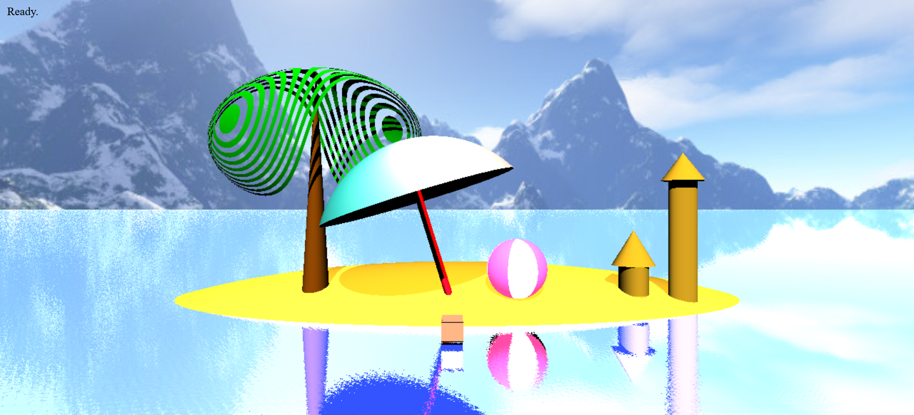

I constructed this beach scene for my graphics using OpenGL and WebGL to render these different shapes and textures, accounting for lighting, shadows, and the presence of other objects.
This project was intended to explore ray tracing and other advanced graphics principles. This project includes the following:
- Clipped quadrics
- Procedural texturing (Beach Ball)
- Phong-Blinn bidrectional reflectance distribution Function (BRDF)
- Diffuse BRDF lighting with projected planar texturing
- Shadows implented with non-ideal Lambertian BRDFs
- Omnidirectional and isotropic point lights
- Infinite planes (Ocean)
- Reflections
- Procedural solid normal mapping (Waves)
- Procedural solid texturing to discard ray hits (palm leaves)
Tips to navigate the beach scene:
- keys A/D : left/right
- keys Q/E : down/up
- keys W/S : closer/farther
- Click and drag mouse to change camera angle